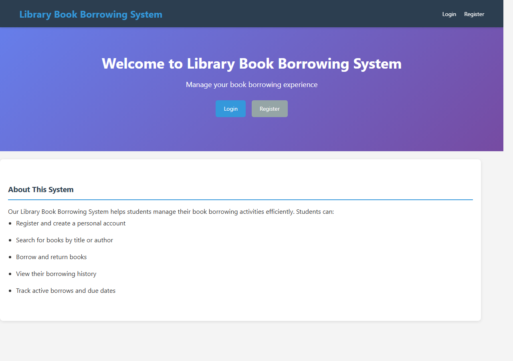
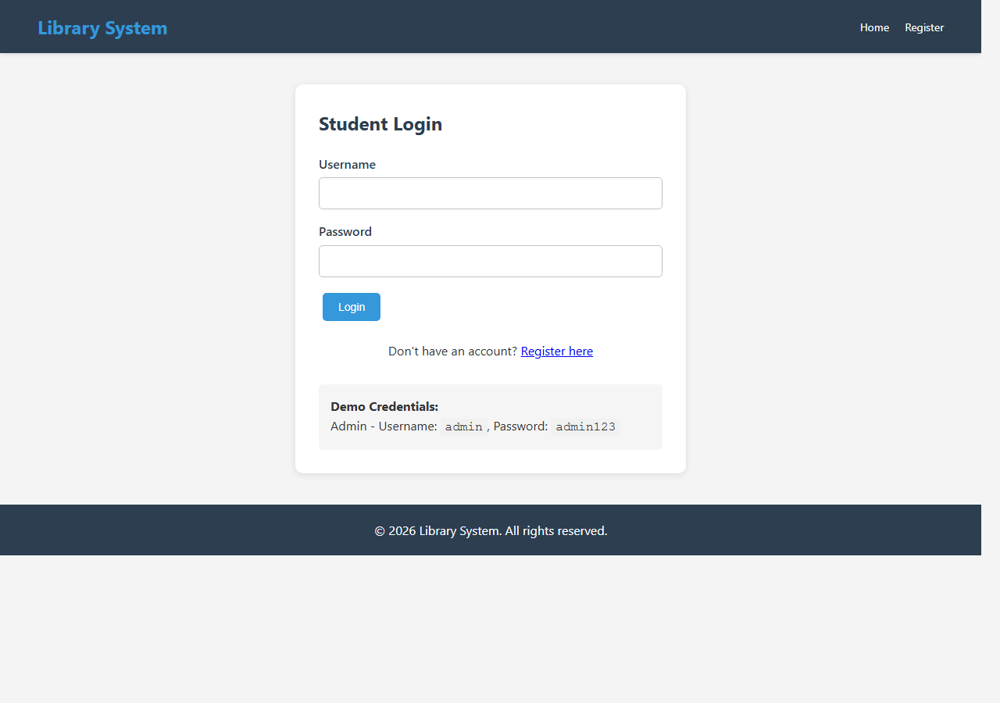
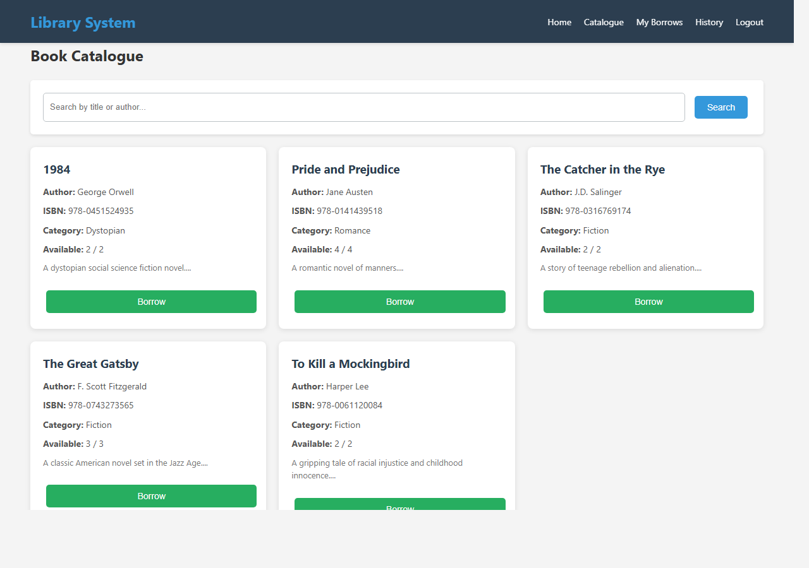
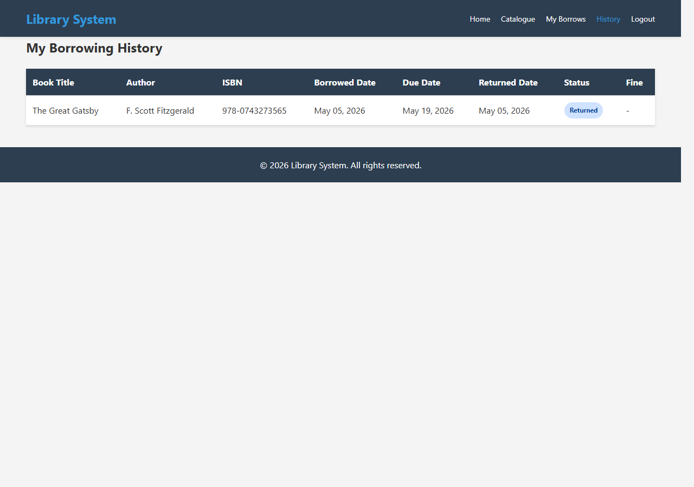
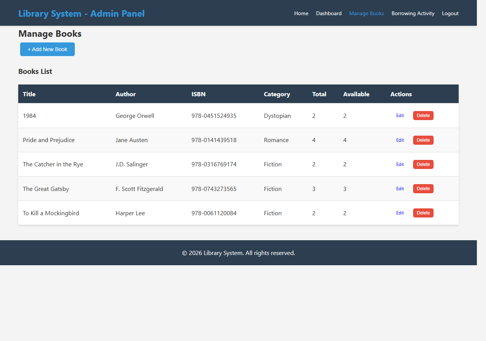
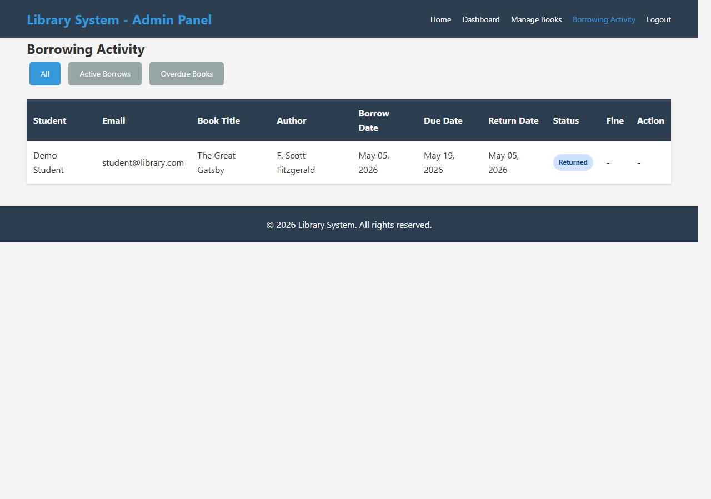

The Library Book Borrowing System is a PHP and MySQL web application for managing student book loans. Students can register, log in, search the catalogue by title or author, borrow available books, return books, and view their borrowing history. Admin users can manage book records and monitor borrowing activity.
| Requirement | Implementation |
|---|---|
| Registration, login, logout, and sessions | `User.php`, `register.php`, `login.php`, and `logout.php` manage authentication and protected pages. |
| Forms, validation, and persistent data | Student registration, book borrowing, returns, and admin book forms store data in MySQL with feedback. |
| Dynamic display, search, and filtering | Catalogue, borrowing history, admin dashboard, and borrowing activity pages retrieve records from MySQL. |
| Edit, delete, and role-based access | Admins can add, edit, and delete books. Admin pages require the `admin` role. |
| Table | Main Columns | Purpose |
|---|---|---|
| users | user_id, username, email, password, full_name, role, enrollment_id, phone, address, is_active | Stores student and admin accounts. |
| books | book_id, title, author, isbn, publisher, publication_year, category, total_copies, available_copies, description | Stores book catalogue records and availability. |
| borrowing_records | record_id, user_id, book_id, borrow_date, due_date, return_date, status, fine_amount | Stores borrowing and return transactions. |






A key challenge was coordinating borrowing records with book availability so that returned books become available again and active loans are protected from accidental deletion. Another challenge was keeping student and admin permissions separate while still allowing both roles to use the system smoothly.
I learned how to connect PHP pages to a MySQL database using prepared statements, manage user sessions, validate form input, and organize a dynamic web application into reusable classes for users, books, borrowing records, and database access.
The finished system meets the required capabilities for a dynamic database-backed web application. It includes authentication, protected pages, role-based access, data entry, validation, dynamic display, search, editing, deletion, and persistent MySQL storage.